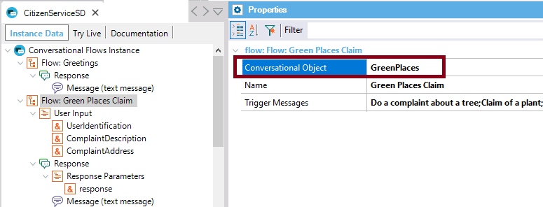
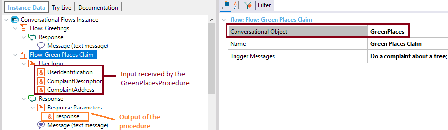

GeneXus object that will implement the flow’s action. In the case of web objects, it has to be a Web Component.
It's called automatically after the User inputs are entered.
If the Flow Message has a Component view Style, and the SD Component or Web Component property is set, you have to call the Conversational Flows object from the Start Event of the corresponding component. Scope Objects: Conversational Flows Description
It is a property of the Flow of a Conversational instance. The value of this property should be a GeneXus object (Business Components, Data Providers, Procedures, Web components and SD Panels), which will end up resolving the intent associated with the Flow. At the end of the flow necessary to fulfill the intent, all data will be passed on to this object, which may return a response. When is the Conversational Object triggered? The conversational object can be triggered automatically. It happens when all of these are fulfilled:
There are two different situations in which the conversational object is automatically triggered, which are the following: 1. If there is a Chatbot Response with a Message whose Action = "Component view", and the Component is auto-generated (Web Component property or SD Component property is empty), the conversational object is called from the auto-generated Component (Generated Component property and Generated Web Component property). On the contrary, if the Action = "Component view" but you use a custom component (SD Component property or Web Component property is set to a component of your own), you have to call the Conversational object in the ClientStart (Start) event of your component. 2. If there is no Chatbot Response, or the Chatbot Response is a Message whose Action = "Text message" or "Redirect To", the conversational object is called immediately after the User inputs are entered. Notes:
Samples
Consider the following example, where the conversational object associated with the Flow is the "GreenPlaces" procedure:  The procedure has the following parm rule: parm(in:&UserIdentification, in:&ComplaintDescription, in:&ComplaintAddress,out:&response); Note the User inputs declared in the flow which are mapped to each of the parameters received by the "GreenPlaces" procedure.  The same happens to the &response parameter, which is assigned when the execution of the "GreenPlaces" procedure is complete. AvailabilityThis property is available since GeneXus 15 upgrade 12. See Also
|